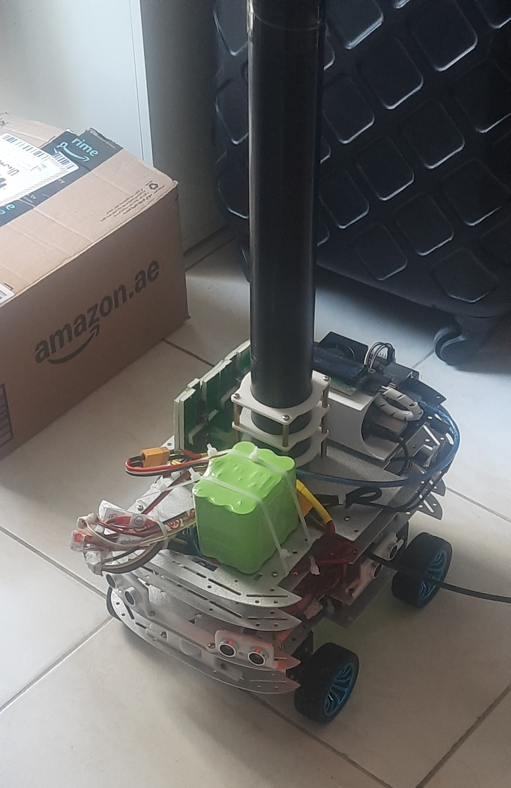
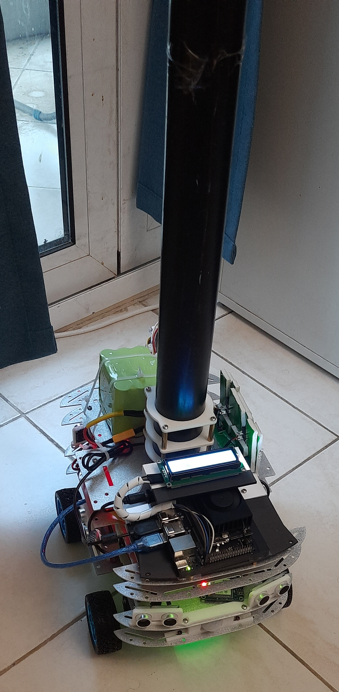
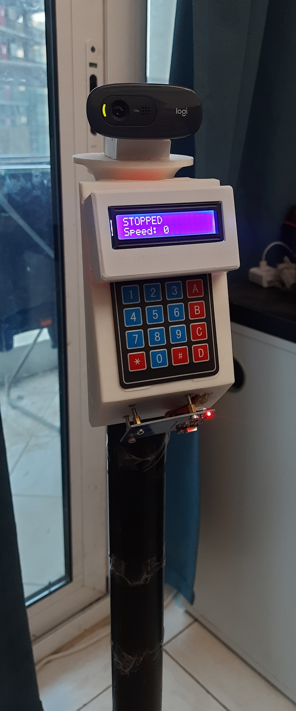

This week is still in progress. This post reflects the work done so far; more will be added as the rest of the week happens.
Final Wiring Declared Complete
The wiring on the 4-motor, 2-encoder setup mapped out and physically connected in Week 14 got its final fixes today, closing out that thread. This is a hardware-side call, not something re-verified independently here — the real test is the integration run coming up next, not a claim on its own.
A Battery Clip for the Custom Pack
A new mounting part — Battery Clip (All/Bottom/Top — a two-piece clip design) — was designed to physically hold the custom 18650 battery pack from Week 14 in place on the chassis, rather than leaving it loose. The wire-hiding cover's support bar from Week 13 was revised again alongside it, to fit around the final wiring run.
Everything Together, Finally — the Robot Assembled
By 20 September the whole robot was physically together for the first time: four new motors and wheels, the custom battery pack zip-tied on top, the Jetson and its LCD stacked on the chassis, the camera tower mounted, and the six-sensor ultrasonic ring around the edge. The 3D-printed camera, LCD, and keypad housings designed back in Week 13 are visibly fitted on the head unit now, which closes the "printed and test-fitted" item that had been open since then. (19 September was a check-in only, with no work done.)



STOPPED / Speed: 0), and keypad.The First Integrated Drive Attempt Failed
The first real drive attempt — four motors, the new battery, driven from the Jetson's web dashboard over a remote login — failed: the motors jittered briefly, then nothing moved at all, and raising the speed made the motor driver get very hot with still no movement. No root cause was confirmed that day, only symptoms. Four working hypotheses were written down so the next session wouldn't start from zero, none of them confirmed: two motors paralleled on each L298N channel with one reversed, so the pair fights itself and stalls; stall-level current on a paralleled channel (up to about 2.4A against an L298N's roughly 2A-per-channel rating, with only a small heatsink); the new pack's protection circuit or wiring current-limiting or sagging under motor startup load, the same symptom family as the old pack's dead cell; and mix-ups from the colour-swapped extension wiring, including the risk of motor power reaching an encoder signal line. The planned first step is bench-supply isolation — one motor, then one pair, current-limited — the same method that isolated the spare driver's dead channel in Week 14.
Finding Which Wheel Is Which — and a Direction Fix
A new serial-driven Mega sketch, TwentyFirstTest_MotorSideFinder, pulses each driver channel and direction and reports encoder counts, to work out which wheels sit on which side and which way each one turns, with a stall guard that aborts early if a driven side's encoder doesn't count. Result: with no inversion, "both forward" turned the robot right — the left side went forward and the right side backward. Defaulting the sketch to a right-side inversion fixed it, so forward now drives forward and reverse drives backward (confirmed on the real robot). A matching pin swap was briefly made in the three main Mega firmwares and then reverted the same day at the user's request — troubleshooting stays in the single test sketch until it's all confirmed, main firmware untouched. That direction fix does not explain the earlier hot-driver, no-movement failure, which is still undiagnosed.
Encoder Speed Control, and a Correction to the Pin Plan
The Jetson-facing firmware gained per-side PI wheel-speed control from the encoders (pin-change interrupts plus a 20 Hz Timer3 control loop), new-chassis motor polarity, a soft stall guard with cooldown, an opt-in dead-man watchdog for hold-to-move, and an ENC: telemetry line — with a companion bench sketch, TwentySecondTest_EncoderSpeedDrive, showing live RPM and counts. It didn't link at first: the Servo library already owns the Timer3 compare-A interrupt vector, so the control loop moved to compare-B.
Correction to the Week 14 pin plan: the right-side encoder pins chosen on 17 September (D6/D44) turned out to have no pin-change interrupt support, so the right encoder counts nothing there — it has to move to A8/A9. The rewire is deferred, so a temporary workaround makes the right side mirror the left side's PWM (ENC_MIRROR, to be turned off after the rewire). Only the left encoder actually closes a loop for now.
SMS Support Added — but the GSM Module Won't Answer
SMS sending was added for the A7670C: a non-blocking state machine that probes with AT commands, never blind-pulses the power key, and re-probes every 90 seconds when the module is absent, sending one SMS per new alert with a 5-minute cooldown, wired to both FALL_DETECTED and the keypad's # panic key. It hasn't sent a real message: the module didn't respond at all during testing (state ABSENT) and appears to need its own power supply, so all of this was exercised only up to the point of finding it silent. A TILT_STEP command for vertical face-centering was added as well.
Tracking Latency Cut From 710 ms to About 100 ms
On the perception side, camera-to-tracker latency dropped from roughly 710 ms to about 101 ms median. The cause was DDS queueing up to 10 stale frames; the image subscriptions are now depth-1 best-effort. The motion controller now turns in short pulses in the fine zone (0.2 s on, 0.6 s off) because the wheels can only spin at full power, tracks the face vertically for the tilt servo, and remembers the left-encoder count at the start of a turn so it can pulse back to that "home" heading if the person is lost within 1.5 seconds — simulated offline only, not yet seen live. The centre band was widened to 30% of the frame width, fall detection now looks at up to three poses and only checks the one linked to the tracked face, the debug viewer shows both the tracking and skeleton panels, and a new run_logger.py records every run (wheel RPM against target, PWM, encoder counts, latency, commands, sensors, fall status) to CSV for tuning and a later PID.
What the Recorded Runs Showed
Three armed trials and one tilt test were recorded. In trial 2, the left wheel stalled at full power (about −7 RPM at PWM 255), so each turn only rotated the wheel about 0.3 of a revolution; the left ultrasonic sensor read 11.75 then 6.9 cm in the small room and triggered an emergency stop; and the face lock was lost 1.4 seconds after the first turn. Trial 3 never moved at all — the user stood at the edge of the frame, the face never registered, and the new heading-memory return remains unverified live. Two other findings: about 60% of serial status lines came through corrupted once the motors were running (0% while stationary, and not the dashboard's doing), pointing at motor noise or power sag on the USB link; and a bedsheet produced a false wristband lock, so the minimum band area was raised to 2500 at runtime — not yet saved in the config file, so it's lost on a tracker restart. One practical rule surfaced too: only one process can hold the serial port and camera at a time, so the dashboard service and the ROS2 stack are mutually exclusive.
The day ended with the pipeline left running disarmed — the robot can't move in that state — and the project's dissertation deadline (15 September) already behind it, with live testing carrying on.
What Did Not Go Well (So Far)
The first integrated drive attempt failed and its root cause — hot driver, no movement — is still unknown. The left wheel stalls in spins, the drive motors still look underpowered under load, the right encoder counts nothing and needs rewiring, the tilt servo doesn't physically move the camera (likely power again), the GSM module doesn't respond and needs its own supply, and serial garbling under motor load points at a real power or noise problem that the new battery hasn't solved. The heading-memory return and the wider centre band have only been checked offline. Older items are still open too: the RTC driver is unverified, the dashboard's admin password is still the default, and the custom pack has only been run in these first tests, not characterized under sustained load.
Week 15 Checklist (So Far)
| Final 4-motor/encoder wiring fixed and declared complete | ✓ Complete |
| Battery Clip designed to mount the custom pack | ✓ Complete |
| Wire-hiding cover support bar revised for final wiring | ✓ Complete |
| Robot fully assembled with printed covers fitted | ✓ Complete |
| Wheel side/direction mapped (MotorSideFinder); direction fixed in the test sketch | ✓ Complete |
| Encoder speed-control firmware written and flashed | ✓ Complete |
| SMS state machine written (A7670C) | ✓ Complete — never sent a real SMS |
| Camera-to-tracker latency cut 710 ms → ~101 ms | ✓ Complete |
| Run logger + 3 armed trials + tilt test recorded | ✓ Complete |
| First integrated drive test | ✗ Failed — cause undiagnosed |
| Left wheel stall / underpowered drive motors | ⏳ In Progress |
| Right encoder moved to A8/A9 (pin-change capable pins) | ⏳ In Progress |
| GSM module powered from its own supply and answering | ⏳ In Progress |
| Tilt servo physically moving the camera | ⏳ In Progress |
| Serial garbling under motor load explained and fixed | ⏳ In Progress |
| Heading-memory return verified live | ⏳ In Progress |
band_min_area saved into the tracker's YAML config | ⏳ In Progress |